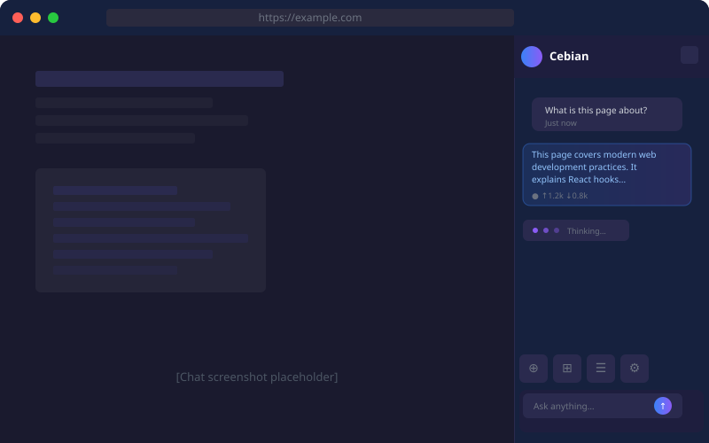
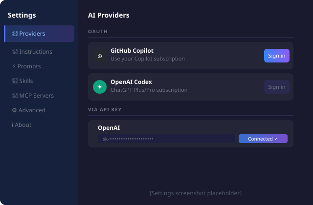

Chat Interface
The main chat area is where you interact with the AI. Select a model from the model picker at the top, type your message, and press Enter or click Send.

Attachments
Click the paperclip icon to attach images or files. You can also paste images directly from the clipboard. Attachments are sent to the AI as context.
Page Screenshot
Capture a screenshot of the current tab and attach it to your message so the AI can see exactly what you see.
Element Picker
Click the cursor icon to enter pick mode. Then click any element on the page to capture its HTML and text as context. Useful for debugging or explaining specific UI elements.
Mobile Emulation
Toggle mobile-device emulation on the active tab. The page reloads in a mobile viewport so you can test responsive layouts side-by-side with the AI.
Slash Prompts
Type / in the chat input to open the prompt picker. Select a saved prompt to insert it into the input with all template variables filled in.
Settings
Open settings by clicking the gear icon at the bottom of the side panel. Settings are organized into the following sections.

Providers
Configure which AI providers and models are available to you. Cebian supports three categories of providers:
- OAuth providers (GitHub Copilot, OpenAI Codex via ChatGPT, Google Gemini CLI) — sign in once with your existing subscription.
- API Key providers (OpenAI, Anthropic, Google Gemini) — paste your API key to unlock all models from that provider.
- Custom OpenAI-compatible providers — configure any endpoint that speaks the OpenAI API (e.g. Ollama, LM Studio, or a self-hosted proxy).
Instructions
Write custom instructions that are appended to the default system prompt. Use this to adjust the AI's language, tone, or persona. For example:
- Reply in English - Keep answers concise - Default to TypeScript when discussing code
Instructions cannot override tool protocols or built-in safety rules. Maximum 2,000 characters.
Prompts
Build a library of reusable prompt templates. Trigger any prompt by typing / in the chat input. Templates support these dynamic variables:
{{selected_text}}— currently selected text on the active page{{page_url}}— full URL of the active page{{page_title}}— title of the active page{{date}}— today's date{{clipboard}}— current clipboard content
Explain the following text in simple terms: {{selected_text}}
Skills
Skills are multi-file instruction packs following the agentskills.io specification. The AI can load and run them on demand to handle complex, domain-specific workflows.
MCP Servers
Connect external Model Context Protocol (MCP) servers to expose their tools to the agent. Click "Add MCP server" and fill in:
- Name — a short identifier for this server
- Transport — Streamable HTTP (recommended) or SSE
- URL — the server's endpoint URL
- Authentication — None, or Bearer token
- Custom headers — optional HTTP headers
Server status indicators:
- Idle — server is configured but not yet called
- Connected — last tool call succeeded
- Disconnected — server could not be reached
- Reconnecting — automatic retry in progress
- Unavailable — circuit breaker open after repeated failures
- Disabled — server is toggled off
Advanced
Fine-tune agent behaviour with low-level knobs.
Max conversation rounds
Sets the maximum number of message pairs kept in the context window before older messages are truncated. Default is 200, range 1–1,000. Lower values save tokens; higher values preserve more history.
About
Shows the current extension version and links to the GitHub repository, license, and feedback.
Ready to try Cebian?
Install Now